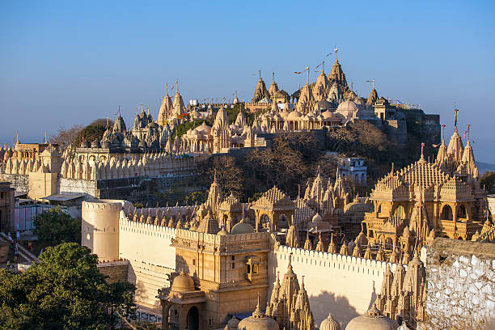
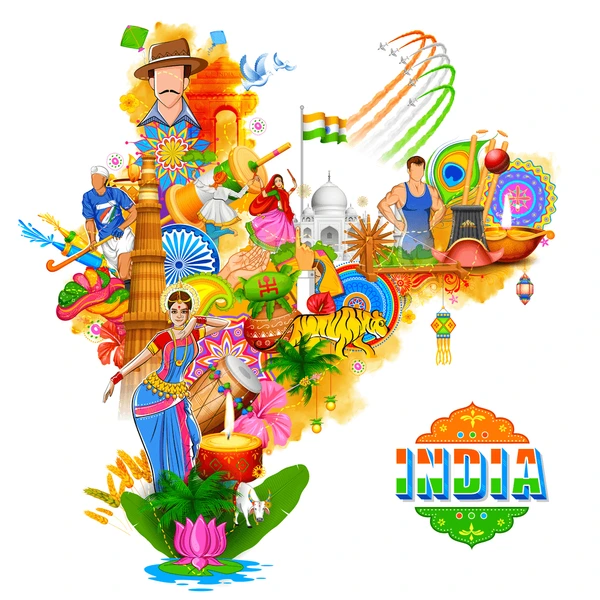
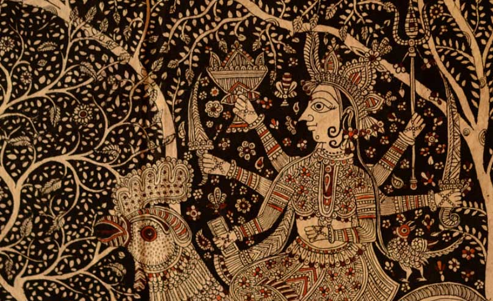
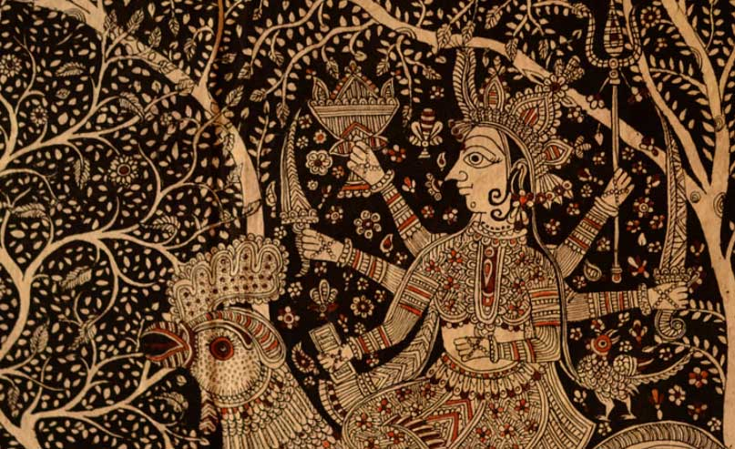

Culture Of India
Indian culture is the heritage of social norms and technologies that originated in or
are associated with the ethno-linguistically diverse nation of India, pertaining to the Indian subcontinent
until 1947 and the Republic
of
India post-1947. The term also applies beyond India to countries and cultures whose histories are strongly
connected
to India by immigration, colonization, or influence, particularly in South Asia and Southeast Asia. India's
languages, religions, dance, music, architecture, food, and customs differ from place to place within the
country.
Indian culture, often labelled as a combination of several cultures, has been influenced by a history that is
several millennia old, beginning with the Indus Valley Civilization and other early cultural areas.
Many elements of Indian culture, such as Indian religions, mathematics, philosophy, cuisine, languages, dance,
music, and movies have had a profound impact across the Indosphere, Greater India, and the world. The British
Rule further influenced Indian culture, such as through the widespread introduction of the English language,
which resulted in a local English dialect and influences on the Indian languages.For generations, India has had
a prevailing tradition of the joint family system. It is when extended members of a family : parents, children,
the children's spouses, and their offspring, etc. live together. Usually, the oldest male member is the head
of the joint Indian family system.
Religious Culture
Indian-origin religions Hinduism, Jainism, Buddhism, and Sikhism, are all based on the concepts of dharma and
karma.India has 28 states and 8 union territories with different cultures and is the most populated country in
the world. The Indian culture, often labeled as an amalgamation of several various cultures, spans across
the Indian subcontinent and has been influenced and shaped by a history that is several thousand years
old. Throughout the history of India, Indian culture has been heavily influenced by Dharmic religions.



Festivals Of India :
Indian culture is rich with festivals that are diverse, vibrant, and deeply rooted in religious and regional
traditions. These festivals, celebrated with great enthusiasm, often involve religious ceremonies, rituals,
processions, music, dance, and communal feasts. Some of the most prominent include Diwali (Festival of Lights),
Holi (Festival of Colors), Dussehra, Navratri, and numerous regional harvest festivals like Onam and Baisakhi.
Several harvest festivals such as Makar Sankranti, Sohrai, Pusnâ, Hornbill, Chapchar Kut, Pongal, Onam and Raja
sankaranti swinging festival are also fairly popular. India celebrates a variety of festivals due to the large
diversity of India.

Visual art
India has a very ancient tradition of art, which has exchanged many influences with the rest of Eurasia,
especially in the first millennium, when Buddhist art spread with Indian religions to Central, East and
Southeast Asia, the last also greatly influenced by Hindu art.Almost all surviving ancient Indian art
is in various forms of religious sculpture in durable materials, or coins. There was probably originally far
more in wood, which is lost. In north India Mauryan art is the first imperial movement. In the
first millennium CE, Buddhist art spread with Indian religions to Central, East and Southeast Asia, the last
also greatly influenced by Hindu art.Most of the earliest large sculpture is Buddhist, either excavated from
Buddhist stupas such as Sanchi, Sarnath and Amaravati, or is rock cut reliefs at sites such as Ajanta,
Karla and Ellora. Hindu and Jain sites appear rather later. In spite of this complex mixture of
religious traditions, generally, the prevailing artistic style at any time and place has been shared by the
major religious groups, and sculptors probably usually served all communities.
Ancient Paintings
Ancient painting has only survived at a few sites, of which the crowded scenes of court life in the Ajanta Caves
are by far the most important, but it was evidently highly developed, and is mentioned as a courtly
accomplishment in Gupta times. Painted manuscripts of religious texts survive from Eastern India about the 10th
century onwards, most of the earliest being Buddhist and later Jain. No doubt the style of these was used in
larger paintings.
 

The style spread to Hindu courts, especially among the Rajputs, and developed a variety of styles, with the
smaller courts often the most innovative, with figures such as Nihâl Chand and Nainsukh.In the 19th century,
cheap Kalighat paintings of gods and everyday life, done on paper, were urban folk art from Calcutta, which
later saw the Bengal School of Art, reflecting the art colleges founded by the British, the first movement in
modern Indian painting.
Why is India known for its culture ?
India is renowned for its rich and diverse culture, a tapestry woven from thousands of years of history,
encompassing a multitude of traditions, religions, languages, and art forms. This vibrant blend has captivated
the world, making India a global cultural beacon.
India stands out because of the following:
🎵 Ancient and Extensive Heritage
🎵 Religious and Philosophical Diversity
🎵 Artistic and Architectural Marvels
🎵 Festivals and Celebrations
🎵 Influence on Global Culture
🎵 Linguistic Variety
🎵 Resilience and Unity
To know more about Indian Culture, visit the following site:
Indian Culture,
traditions and Customs